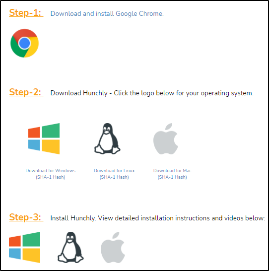
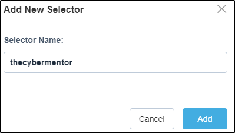

https://hunch.ly/
Register and get the addon:

Download the version right for you and check the emails for the free key:

######################################################################
We can run the Hunchly Dashboard and add a new case:

We can add something related in "Selectors":
this way it will scan all files for the selectors!
Useful for names, passwords, nicknames, email, phone numbers etc.


We can add tags to separate our collection and findings:
Examples are "Social Media", "Breached Passwords" etc.


You can create a TO-DO list and a checklist:


#################################################################################
How to use the tool:
Go on Google Chrome and activate the add-on:

Add the highlight option on the dashboard (not on the addon!)

As we can see, if we search online the Hunchly add-on will count
the istances of selector found!

We can bookmark pages, so we can found them later on the dashboard!


To add a website to some kind of tag, we can do it
from the add-on:

We can take some notes with right click on the page:


We can look for the original pages found or on WaybackMachine:

If you click on a link, you can view more!

At the end, we can export the results: